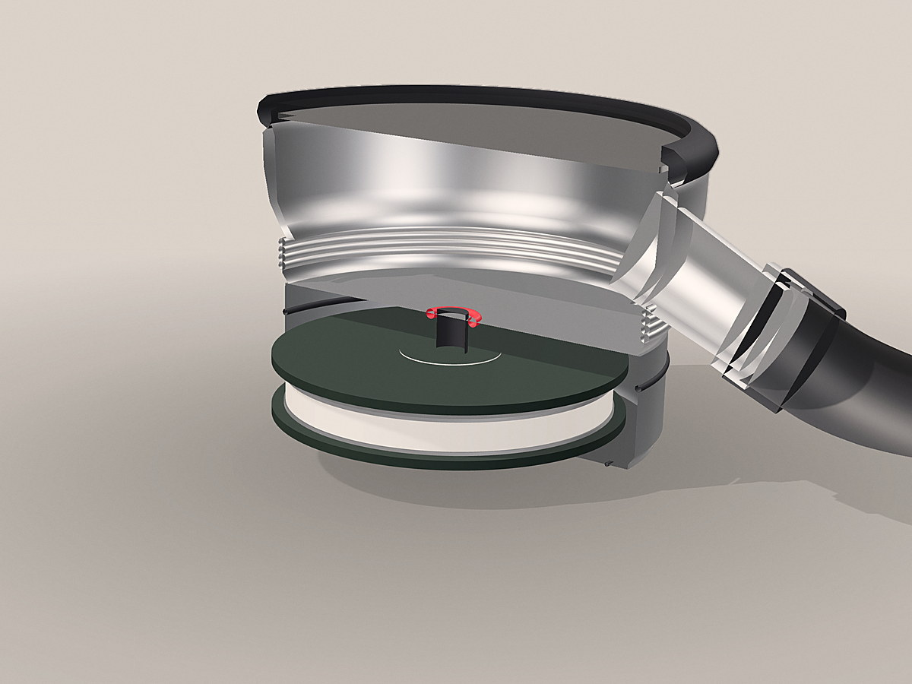
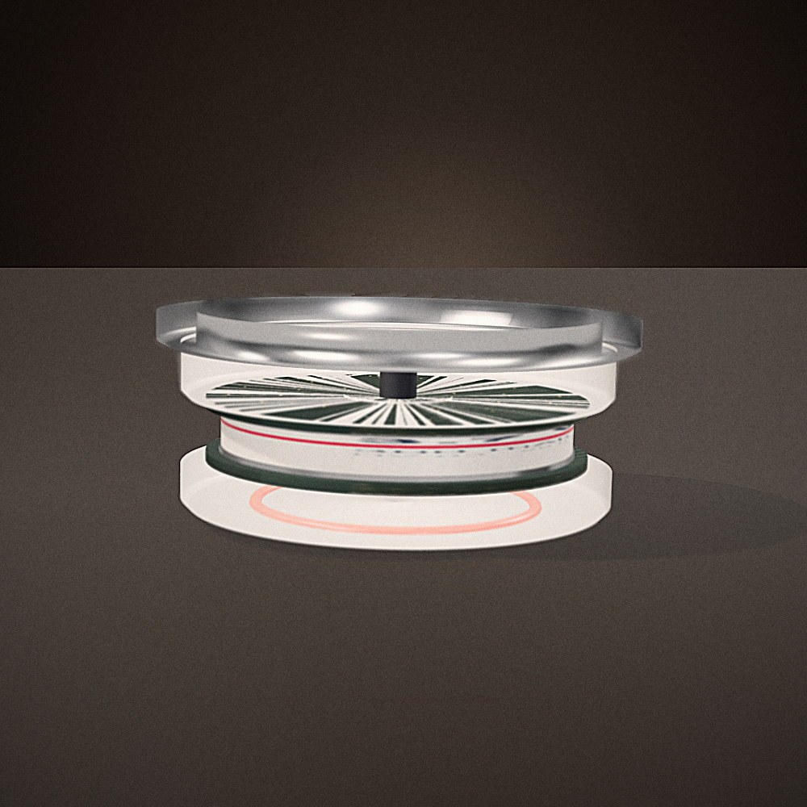
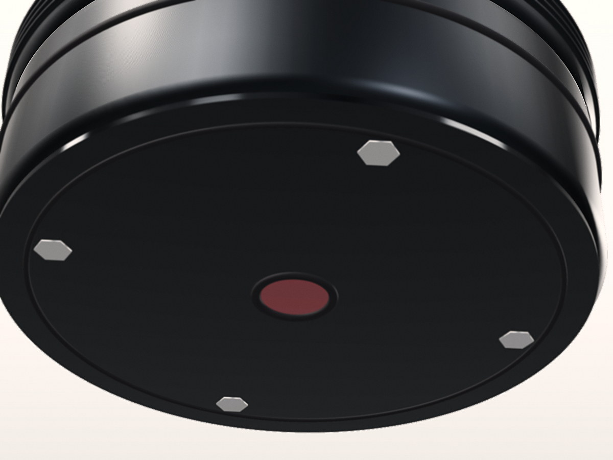
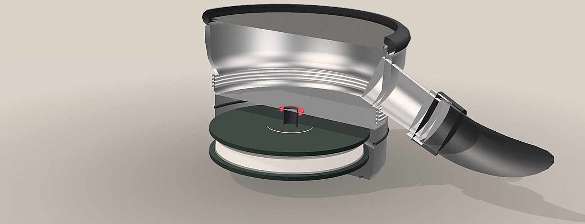

The insert.
It replaces the back plate of the head, so the diaphragm, stem and tube stay exactly as they are. Three printed revisions, fitted by hand to 44, 46 and 48 mm heads. It has not been tooled.




All four are CAD renders of the printed revision. They are the closest thing we have to a photograph until a finished part exists, and they are not a substitute for one.
How it seats.
Every number below was measured on a printed part, by hand, with calipers. Nothing here is a target.
| Seat diameter | 38.9 mm |
| Fits chestpieces | 44, 46 and 48 mm, single and double heads |
| Retention | Stock stem collar. No adhesive, nothing drilled |
| Depth behind the back plate | 14 mm |
| Acoustic port | 3 mm, aligned to the cup |
| Sealing | Silicone face gasket with an O-ring groove, IPX4 |
| Mass | 45 g |
What is inside
| Microphones | 2 × TDK ICS-43434 |
| Audio | 24-bit, 20 Hz to 2 kHz |
| Radio | nRF52840, Bluetooth 5 |
| Storage | 16 MB ring buffer |
| Battery | 300 mAh Li-Po, USB-C |
| Runtime | About 20 h streaming, 100 exams |
Two channels, so room noise is rejected before anything is stored.
Cheaper than the instrument it fits into.
A price with no comparator is just a number, so here it is next to what a clinic would otherwise buy to get a recording.
$59 a pilot unit
Components come to $38.25 from the bill of materials at 500 units. The pilot price includes the app and the protocol, and there is no consumable and no subscription.
A clinic that already owns a stethoscope needs nothing else.
This is a prototype, and the page says so.
Not a medical device, not cleared, and not for diagnosis. What exists is a printed insert that fits a stethoscope it was not designed for, and a correction that has been tested in simulation.